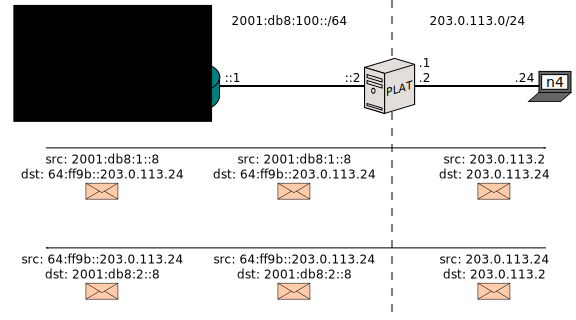

Documentation > Runs > 464XLAT
464XLAT
Index
Introduction
NAT64 is not perfect. While you might see a lot of traffic getting translated quirklessly, you might eventually bump into the following rough edge:
Barring RFC 6384, NAT64 only translates network headers (IPv4, IPv6 and ICMP) and transport headers (UDP and TCP). Sometimes, this is a problem. Some protocols on top of UDP and TCP have a bad habit of including IP addresses (“IP literals”) along their conversations; because NAT64 only translates lower protocols, these literals will slip past the NAT64 unmodified.
For example, some IPv6-unaware website, which would normally contain this HTML:
<a href="www.jool.mx/index.html">Link to something.</a>
Could be poorly coded like this:
<a href="203.0.113.24/index.html">Link to something.</a>
This address lies within the body of an HTML file, not a network or transport header. It is not viable for Jool to support translation of all existing application protocols.
If you click the latter version of the link from an IPv6-only node via a NAT64, it will of course not work, because the node doesn’t have an IPv4 stack with which to access 203.0.113.24. www.jool.mx works fine because the DNS64 appends the NAT64 prefix once the node asks about it; on the other hand, if all the node has is 203.0.113.24, it can’t really tell it’s talking via a NAT64, much less know which prefix should be appended.
464XLAT is a technique meant to address this limitation. It functions by appending an SIIT into the mix, that reverses the work made by the Stateful NAT64. The idea can be generalized to also provide Internet to IPv4-only services when all you have is an IPv6 address space, which is SIIT/DC: Dual Translation Mode.
This document is a dumbed-down summary of both of these techniques, collapsed into a walkthrough that uses Jool.
Sample Network

The red box would be your domain. n6 stands for “IPv6 node” and R is “router”. Say your ISP gives you only IPv6 addresses, but it also grants you access to IPv4 via a stateful NAT64 (PLAT; “Provider-side Translator”). n4 is a random IPv4 Internet node.
Say your user from n6 clicks a link towards 203.0.113.24. n6 does not have an IPv4 stack, so the request has nowhere to go. The situation could be amended by manually appending the NAT64 prefix to the address, but the user doesn’t know that. Of course, a DNS64 would be the ideal and transparent solution, but unfortunately the site provided an address and not a domain name, so n6 is not querying the DNS.
Alternatively, n6 might want to provide a legacy service (or client) which is unfortunately tied to IPv4. Because n6 only has global IPv6 addresses, it appears it cannot do so.
In broad terms, the solution is to provide n6 with a “fake” IPv4 stack whose packets will be translated into IPv6 before reaching PLAT. In other words, an SIIT service (in 464XLAT terms called “CLAT”; “Customer-side Translator”) will be sort of undoing PLAT’s work.
There are rather several ways to do this. Unfortunately, one of them (making n6 the CLAT) is rather embarrassingly not yet implemented by Jool. One that does work is to make R the CLAT. The network would look like this:

I also removed the clouds to simplify routing in the example. The dual translation idea has really nothing to do with routing, so this is unimportant.
Expected Packet Flow
This is the normal flow an IPv6-sourced packet would traverse. It’s a typical stateful NAT64 flow and the Dual Translation presented in this configuration will not interfere with it: Notice we’ve chosen 64:ff9b::/96 as PLAT’s NAT64 prefix:

The 464XLAT flow we want to achieve follows. n6 will use its IPv4 address to try to query the literal (or whatever IPv4 Internet address):

R will SIIT the packet into IPv6 so it can traverse the IPv6-only chunk. Address 192.168.0.8 will be translated using the EAMT, and 203.0.113.24 will receive the pool6 prefix treatment to mirror PLAT’s.

PLAT will do its magic and send the packet to the IPv4 Internet:

And the mangling will be mirrored for the response:

Configuration
n6 doesn’t know it kind of owns another IPv6 address in the 2001:db8:2::/96 network. It never sees this traffic, because R always translates it towards 192.0.2.0/24.
service network-manager stop
ip link set eth0 up
ip addr add 2001:db8:1::8/64 dev eth0
ip addr add 192.168.0.8/24 dev eth0
ip route add default via 2001:db8:1::1
ip route add default via 192.168.0.1
This is R:
service network-manager stop
ip link set eth0 up
ip addr add 192.168.0.1/24 dev eth0
ip addr add 2001:db8:1::1/64 dev eth0
ip link set eth1 up
ip addr add 2001:db8:100::1/64 dev eth1
# Traffic headed to the real IPv4 Internet goes via PLAT.
ip route add 64:ff9b::/96 via 2001:db8:100::2
# Enable SIIT.
# We're masking the private network using an EAMT entry.
# Traffic towards the Internet is to be appended PLAT's prefix.
# Recall that the EAMT has higher precedence than the prefix.
modprobe jool_siit pool6=64:ff9b::/96
jool_siit --eamt --add 192.168.0.8/29 2001:db8:2::/125
n6’s packet will have addresses 192.168.0.8 and 203.0.113.24. The former will be translated using the EAMT entry (since it matches 192.168.0.8/29) and the latter will use the pool6 prefix (because it doesn’t match).
Also note that R is an average SIIT implementation and you shouldn’t think of this installation of Jool as anything other than that.
For completeness sake, here’s PLAT’s network configuration:
service network-manager stop
ip link set eth0 up
ip addr add 2001:db8:100::2/64 dev eth0
# I'm pretending the ISP gave us these two prefixes to play with.
ip route add 2001:db8:1::/64 via 2001:db8:100::1
ip route add 2001:db8:2::/64 via 2001:db8:100::1
ip link set eth1 up
ip addr add 203.0.113.1/24 dev eth1
ip addr add 203.0.113.2/24 dev eth1
modprobe jool pool6=64:ff9b::/96 pool4=203.0.113.2
And n4 is thoroughly boring:
service network-manager stop
ip link set eth0 up
ip addr add 203.0.113.24/24 dev eth0
ip route add default via 203.0.113.2
Testing
Ping n4 via IPv4 from n6:
$ ping 203.0.113.24 -c 1
PING 203.0.113.24 (203.0.113.24) 56(84) bytes of data.
64 bytes from 203.0.113.24: icmp_seq=1 ttl=62 time=4.13 ms
--- 203.0.113.24 ping statistics ---
1 packets transmitted, 1 received, 0% packet loss, time 0ms
rtt min/avg/max/mdev = 4.130/4.130/4.130/0.000 ms
Ping n4 via IPv6 from n6:
$ ping6 64:ff9b::203.0.113.24 -c 1
PING 64:ff9b::203.0.113.24(64:ff9b::cb00:7118) 56 data bytes
64 bytes from 64:ff9b::cb00:7118: icmp_seq=1 ttl=62 time=14.0 ms
--- 64:ff9b::203.0.113.24 ping statistics ---
1 packets transmitted, 1 received, 0% packet loss, time 0ms
rtt min/avg/max/mdev = 14.053/14.053/14.053/0.000 ms
Closing words
Though at this point you can see how you can defend yourself against IP literals and legacy IPv4-only appliances, you might want to be forewarned that at least one application protocol out there is so poorly designed it works differently depending on whether it’s sitting on top of IPv6 or IPv4. Therefore, addressing IP literals in this case is not sufficient to make FTP work via NAT64.
On the other hand, some network-aware protocols only partially depend on literals, and the NAT64 is not going to get in the way of the features that don’t. FTP’s passive mode falls in this category.
You can make active FTP work by deploying a fully stateless dual translation environment such as siit-dc-2xlat. It works because both the client and server are both using IPv4 sockets, the IPv4 addresses are unchanged end-to-end, and it’s fully bi-directional, so active and passive FTP on arbitrary ports work fine. In siit-dc-2xlat, the IPv6 network in the middle becomes an invisible “tunnel” through which IPv4 is transported.
Here’s a list of protocols that are known to use IP literals. You might also want to see RFC 6586.
- FTP
- Skype
- NFS
- Google Talk Client
- AIM (AOL)
- ICQ (AOL)
- MSN
- Webex
- Some games
- Spotify
- Poorly coded HTML